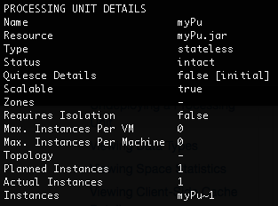
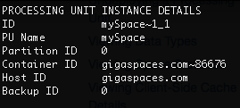

To view the service (Processing Unit) configuration information:
To drill down and see information about a specific service, click the card in the Services area of the Cluster overview page. You can see the following information:
Below the performance graphs, the service instances are listed in a table that contains the following information per instance.
| Parameter | Description |
|---|---|
| ID | Name of the service instance |
| Mode | Mode of the instance (primary or backup) |
| PID | Process ID of the service instance |
| Host | Name and IP address of the machine or JVM hosting the service instance |
| Partition status | Indicates whether the partition is connected or disconnected |
| CPU | Amount of CPU resources being used by the service instance, in percent |
| RAM | Amount of JVM heap being used by the service instance, in percent (actual/allocated) |
| Redolog | Percentage of backlogged transactions that has been restored |
You can filter the table by alert type and instance mode, and sort by any of the columns. You can also do a free text search for the instance name.
Processing Unit
Command:
xap pu info <name> or insightedge pu info <name>
Description:
Display detailed information for the given Processing Unit.
Input Example:
Output Example:

Parameters and Options:
| Item | Name | Description |
|---|---|---|
| Parameter | name | Name of the Processing Unit for which you want to view the details. |
Processing Unit instance
Command:
xap pu info-instance <instance ID> or insightedge pu info-instance <instance ID>
Description:
Display detailed information for the given Processing Unit instance.
Input Example:
Output Example:

Parameters and Options:
| Item | Name | Description |
|---|---|---|
| Parameter | <instance ID> | Instance ID of the Processing Unit for which you want to view details. |
Specific Processing Unit
Path
GET /pus/{id}/instances
Description
The Instance ID, Processing Unit name, Host ID, Container ID, Partition ID, and Backup ID are displayed for the specified Processing Unit.
Example Request
curl -X GET --header 'Accept: application/json' 'http://localhost:8090/v2/pus/myPu/instances'
Example Response
{
"id": "myPu~1",
"processingUnitName": "myPu",
"hostId": "gigaspaces.com",
"containerId": "gigaspaces.com~16674",
"partitionId": 0,
"backupId": 0
}
Options
| Option | Description | Required |
|---|---|---|
| host URL | Provide the Host URL where the REST Manager is running. | Yes |
| name | Provide the name of the Processing Unit for which you want to see the configuration details. | Yes |
Specific Processing Unit instance
Path
GET /pus/{id}/instances/{instanceId}
Description
The Instance ID, deployment name, Host ID, Container ID, Partition ID, and Backup ID are displayed for the specified Processing Unit instance.
Example Request
curl -X GET --header 'Accept: application/json' 'http://localhost:8090/v2/pus/myPu/instances/myPu~1'
Example Response
{
"id": "myPu~1",
"deploymentName": "myPu",
"hostId": "gigaspaces.com",
"containerId": "gigaspaces.com~16674",
"partitionId": 0,
"backupId": 0
}
Options
| Option | Description | Required |
|---|---|---|
| host URL | Provide the Host URL where the REST Manager is running. | Yes |
| name | Provide the name of the Processing Unit for which you want to see the configuration details. | Yes |
| instanceId | Provide the Instance ID of the Processing Unit instance for which you want to see the configuration details. | Yes |
To see specific details about a Processing Unit, Processing Unit instance, or Space in the Processing Unit view, highlight the required component and click the Config tab on the right.
The Config tab displays the general Processing Unit parameters as they were defined in the sla.xml file, and how they were actually deployed in runtime.
| Item | Description |
|---|---|
| Type | Indicates whether the Processing Unit is stateful (contains a Space) or stateless (does not contain a Space). |
| Application | Client application that is running, if applicable. |
| Number of Instances | How many Processing Unit instances have been defined in the sla.xml. |
| Number of Backups |
(For partitioned Processing units) How many backup Processing Unit instances have been defined in the sla.xml. The number of backups per partition is zero or one. |
| Instances per VM | Maximum number of Processing Unit instances that may be deployed per VM (if the hosts are virtual). |
| Instances per Machine | Maximum number of Processing Unit instances that may be deployed per machine (if the hosts are physical). |
| Deployment Status |
Current status of the Processing Unit:
|
| Planned Instances |
How many Processing Unit instances should be deployed in total, based on the number of instances and number of backups configured in the sla.xml file. The number of backups per partition is zero or one. |
| Running Instances | How many Processing Unit instances have been deployed in runtime. |
| Managing GSM | Name, host name, and IP address of the managing Grid Service Manager that deployed the Processing Unit. |
The Config tab displays each component that was configured in the pu.xml and its properties. For example, embedded Spaces, event containers (notify and/or polling), remote services, etc.
The Config tab displays general information about the Space configuration, along with network and environment information, and the configured memory management properties.
This information is also available in the Configuration pane of the Spaces view when you highlight a Space.
| Item | Description | |
|---|---|---|
| General | ||
| Space Schema | Type of schema (default, mirror, or persistent). | |
| Secured | Whether or not this Space is secured. | |
| Persistent | Whether or not this Space is persistent. | |
| Clustered | Whether or not this Space is part of a cluster. | |
| Clustered Schema | (If applicable) The cluster topology (partitioned or replicated). | |
| Network & Environment | ||
| Home Directory | Path where the deployment files are located. | |
| Host Name | Name or IP address of the host machine. | |
| RMI Registry Port | Port number for the RMI registry. | |
| JMX Service URL | Full URL for hte JMX service. | |
| Memory Management | ||
| Cache Policy | Defined cache policy (all in cache or LRU) | |
| LRU Eviction Batch Size | (LRU only) How many of the oldest data objects to remove if eviction is based on available memory. | |
| Cache Size | Amount of memory allocated to the cache. | |
| Memory Management State | Whether the memory manager is enabled or disabled. | |
| High Watermark | When the amount of used cache memory reaches this value (in %), the memory manager must take action (throw an exception or evict objects). | |
| Low Watermark | When the amount of used cache memory reaches this value (in %), the memory manager begins to monitor how much cache memory is left. | |
| Write Operation Rejection | When the amount of used cache memory reaches this value (in %), the memory manager begins to block write operations. | |
| Write Operation Inspection | When the amount of used cache memory reaches this value (in %), the memory manager begins to monitor write operations. | |
Refer to the GigaSpaces Management Center topics in the Administration section.
Refer to the Admin API topics in the Developers Guide.